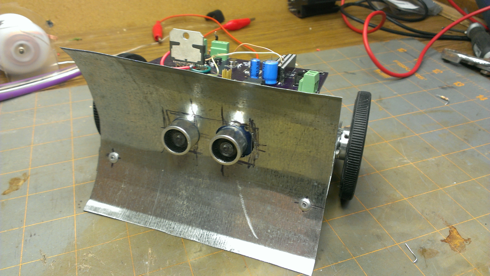

OpenPaste

Github link: here
One of my oldest projects. OpenPaste is an opensource implementation of pastebin. Pastebin, for those unaware or younger was like code pen except none of the code would run in the browser. It was used in the bad ol days of the internet on services like IRC where its considered bad form to send large chunks of code at a time. This also preserves formatting and with the implementation of a third party library supports syntax highlighting for multiple languages. No screenshot as its in PHP from 10+ years ago
Teensy Sumo
Github link: here
C code for a simple sumorobot I built for college. It won me the first place in my weight division and 2nd overall. Not bad